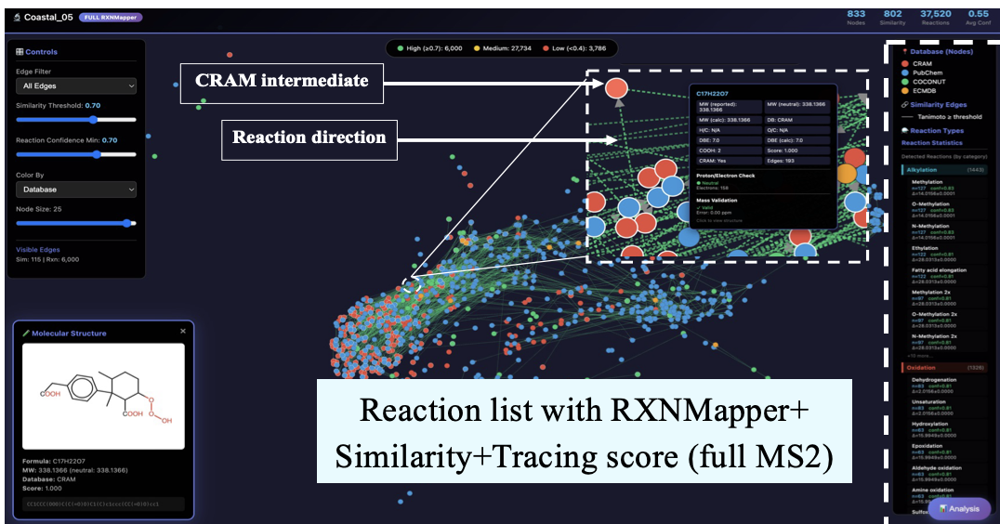

งานของฉันอยู่ที่จุดตัดระหว่าง environmental Engineering, computational chemistry และ การเรียนรู้เชิงลึก ฉันสร้างแบบจำลองและท่อส่งก๊าซที่ช่วยให้เราเข้าใจว่ามลพิษเปลี่ยนแปลง ดำรงอยู่ และมีปฏิกิริยาอย่างไรในระบบสิ่งแวดล้อมที่ซับซ้อน
ฉันเปิดรับความร่วมมือใหม่ๆ อยู่เสมอ คลิกหัวข้อใดก็ได้เพื่อเรียนรู้เพิ่มเติมและติดต่อเรา

การแปรสภาพ DOM
การถอดรหัสความซับซ้อนของโครงสร้างอินทรียวัตถุที่ละลายในน้ำในสภาพแวดล้อมทางน้ำโดยใช้ HR-MS/MS และแบบจำลองกำเนิด
สำรวจและทำงานร่วมกัน →
แบบจำลองการแปลงทางชีวภาพ
การทำนายความเป็นพิษหลายรุ่นโดยใช้กราฟโครงข่ายประสาทเทียมและ Graph Transformer สำหรับการประเมินความเสี่ยงจากมลภาวะต่อสิ่งแวดล้อม
สำรวจและทำงานร่วมกัน →การกำหนดสูตรโมเลกุล MS1
ไปป์ไลน์คำนวณสำหรับกำหนดสูตรโมเลกุลและระบุสารที่ไม่ทราบจากข้อมูล MS1 ความละเอียดสูง
สำรวจและทำงานร่วมกัน →
จลนศาสตร์ด้วยดีปเลิร์นนิง
โมเดล physics-informed และกราฟสำหรับความคงทนในสิ่งแวดล้อม ครึ่งชีวิต และพลวัตปฏิกิริยาตามความลึกมหาสมุทร
สำรวจและทำงานร่วมกัน →การจัดกลุ่มมิติสูง
การจัดกลุ่มชุดข้อมูลโมเลกุลและลำดับขนาดใหญ่ด้วย UMAP, DBSCAN และการแบ่งกราฟ
สำรวจและทำงานร่วมกัน →การค้นพบเอนไซม์ทางทะเล
ค้นพบเอนไซม์ทางทะเลใหม่ในระดับใหญ่ด้วยโมเดลภาษาโปรตีนและการจัดกลุ่มเชิงลึกของปริภูมิลำดับมหาสมุทร
สำรวจและทำงานร่วมกัน →
โมเดลสร้างโมเลกุล
โมเดล VAE และการสร้างบนกราฟเพื่อขยายปริภูมิเคมีรอบ DOM ที่ทนทานและมลพิษอุบัติใหม่
สำรวจและทำงานร่วมกัน →